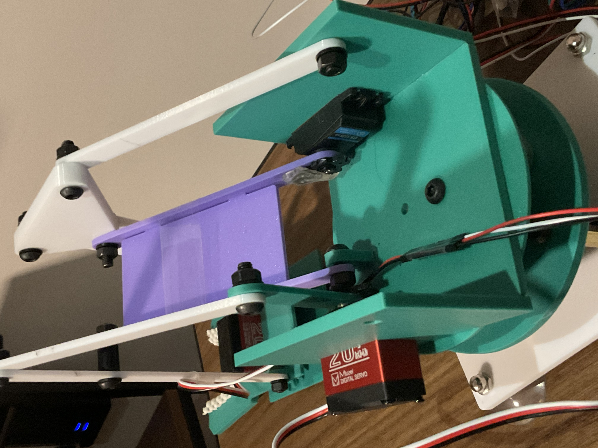
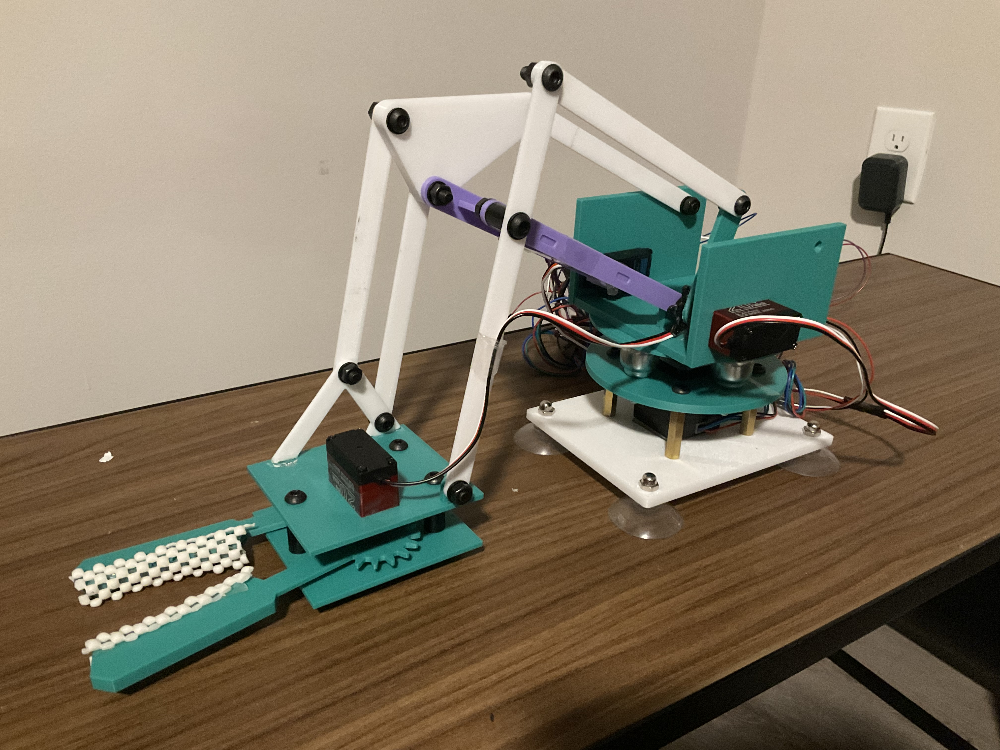
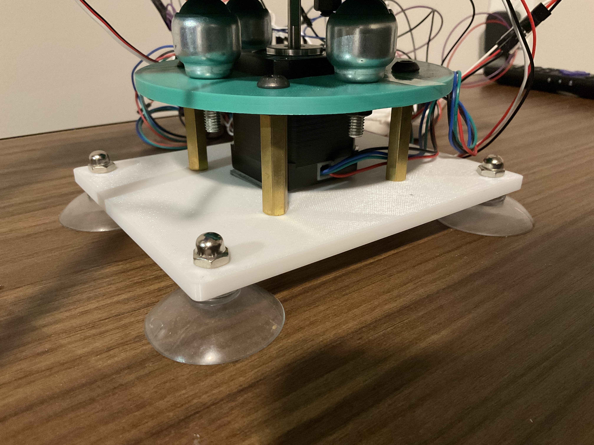
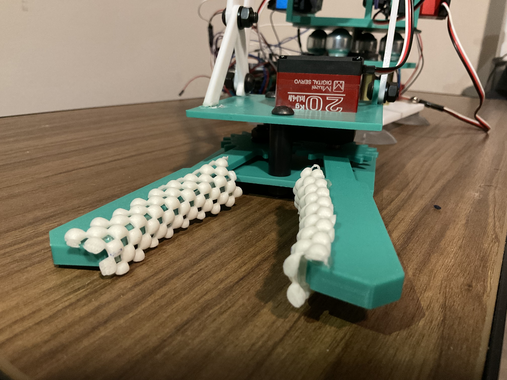
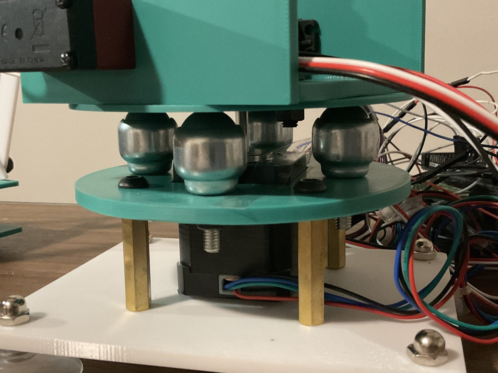
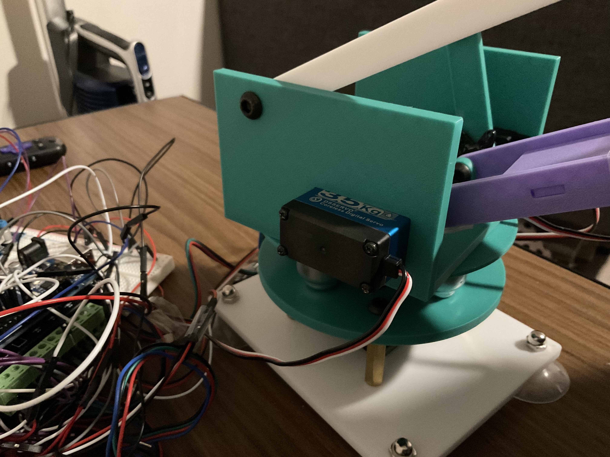
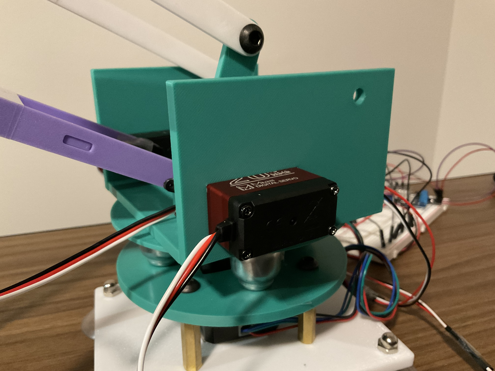

Closed four-bar linkage selected for improved stability and simpler inverse kinematics

Robotics / Kinematics / Mechatronics
A competition-focused robotic arm designed around a closed four-bar linkage, 3D printed structure, servo actuation, stepper-driven base rotation, and Arduino-based motion control.

The goal of this project was to design, fabricate, and control a 4 degree of freedom robotic arm capable of completing a sequence of competition tasks. The arm needed enough workspace to reach objects in the task area, enough payload capacity to lift blocks and a pen, and enough motion control accuracy to pick, place, and trace within timed competition rounds.
The team worked through concept generation, kinematic analysis, CAD modeling, component selection, 3D printing, electrical integration, and testing. The final system combined one stepper motor for base rotation with three servo motors for linkage motion and gripper actuation.
Closed four-bar linkage selected for improved stability and simpler inverse kinematics

Stepper-driven rotating base supported by suction cups, standoffs, and ball transfer bearings

Servo-actuated jaw gripper with geared jaws and textured contact surfaces for object handling

3D printed PLA links and structural plates reinforced with purchased screws, nuts, and spacers

Arduino Mega control system integrating servos, a stepper driver, buck converter, and breadboard wiring

20 kg and 35 kg servo motors used for linkage motion and gripper actuation under payload constraints

The closed linkage required coordinated motion between the two primary linkage servos. The team solved inverse kinematic equations for the actuated angles, tested the math in MATLAB, and used a linear interpolation approach to move the gripper from a home position toward task positions through discrete intermediate points.
The MATLAB model was used to validate that a point on the end effector could follow the desired path in simulation before transferring the control logic into Arduino code for the physical prototype.
My contributions included concept development, CAD-informed mechanical design, fabrication support, actuator integration, and project documentation. The project required connecting mechanical design choices to real control behavior, especially as linkage geometry, servo strength, base stability, and workspace limits all affected whether the arm could complete the competition tasks reliably.

The prototype successfully completed the first four competition rounds, which involved simpler pick-and-drop tasks. It demonstrated a working proof of concept with sufficient speed and estimated payload capacity for the block and pen tasks, but it was not able to complete the final pen tracing challenge after mechanical and control issues emerged.
The most important lessons came from the prototype limitations. Servo gear attachments wore down under repeated loading, electrical behavior caused unexpected servo jolts and heat, and commanded positions did not always match physical arm motion after moving from MATLAB to Arduino. Those issues made the project a useful study in the difference between a successful mechanism concept and a robust competition-ready electromechanical system.
Project Files
{kind=link}
{kind=link}
{kind=link}
{kind=link}
{kind=link}
{kind=link}
{kind=link}
{kind=link}
{kind=link}
{kind=link}
{kind=link}
{kind=link}